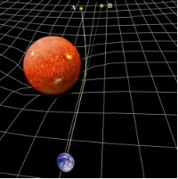
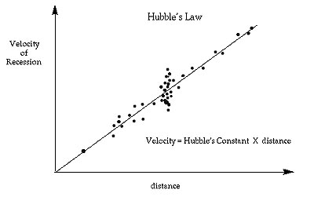
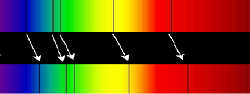
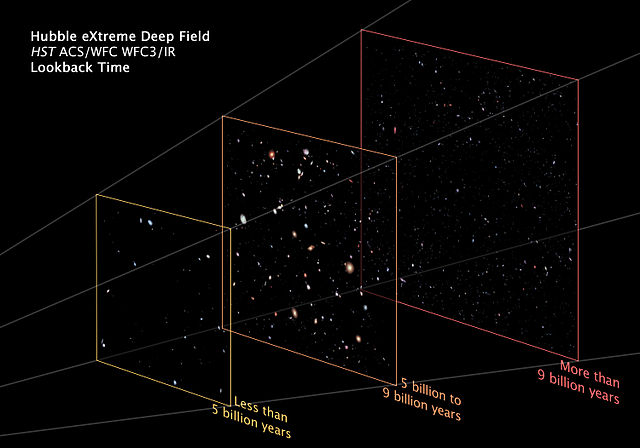

A Galaxy Far, Far Away

Download the full image to a new tab in your browser (7 MB).
If you want to save the image to your computer, after it has loaded into your browser, right click on the image and select "Save Image as...".
When viewed from earth based telescopes, there are regions within the constellation Ursa Major (also known as the Big Dipper) that appear just black. That is, there appear to be no objects in these regions. Scientists believed that there must be objects out there, but they are just too faint to be seen with present day earth based telescopes. An astronomer named Massimo Stiavelli asked the director of the Hubble Space Telescope if he could be given some time to make some long time exposures while pointing to one of the voids. During the end of 2003 and the beginning of 2004, while performing about 400 orbits, Hubble was repeatedly pointed at the void and exposures of about 1200 seconds were taken. In all, they collected about 50 days of exposure. The final image is a composite of visible, ultraviolet, and infrared light.
If we looked up in the evening sky and viewed the "dark area" that this image spans with unaided eye, the space in the image would appear as a 1mm square held 1 meter from our eyes. (NOTE: The characters in this font type have a height of 3.7mm). That 1mm square amounts to about one 24 millionth of the whole sky. That is 1/24,000,000. If the universe is somewhat uniform, you can do the math and calculate an approximation for how many galaxies that the Hubble could actually see. And take this one step further: There are about 200 billion stars per galaxy. So in just this 1mm square of the sky there are about 110 million billion stars represented in the image. Written in scientific notation that's 1.1e17. (Here scientific notation means 1.1 times 10 multiplied by itself 17 times.)
History
The written history of the study of galaxies goes back about 2,500 years to 5 BCE. If you are interested in a timeline of the study of galaxies, click here.
Before we go on and look at the details of this incredible image, it would be interesting to see what the view of the universe was about 100 years ago. Of course the scientific view of the composition of the universe has always been limited by the instruments that were in use at the time. In fact, this statement is true for any scientific field. Only 100 years ago, the measurable universe consisted of only the stars in our own galaxy. Estimates for the size of our galaxy were about 100,000–300,000 light years across, and many believed, according to the data, that our galaxy (or better put, "cluster of stars") was the extent of the whole universe. Telescopes of that time could actually see other galaxies, but astronomers did not know what they were and some referred to them as "fuzzy stars". It was Edwin Hubble who examined the light coming from a "constellation" called Andromeda and determined from its luminosity (brightness) that Andromeda was actually 1 million light years away (by today's measurements it is actually about 2.7 million light years away). Even at a million light years away, Andromeda was clearly outside the Milky Way and was indeed another galaxy. The media picked up on this story and incorrectly referred to Andromeda as an "island universe". Ah, the media.
Hubble went on to examine many other galaxies and determined that they were all receding from earth at a velocity that is proportional to their distance from earth. This experimental discovery laid the foundation for a system of calculating distances of observable objects from earth and gave a sense of dimension to the known observable universe. The work led to the introduction of what is known as the Hubble Constant, which is basically the measure of the expansion rate of the universe. You can appreciate why the Hubble Space Telescope bears his name. If you are interested in Edwin Hubble's life, click here.
At this time I would like to pause and expose you to what a scientific paper looks like if you have never seen one. This particular paper contains all the research data as well as the logical conclusions about the Hubble Constant. This paper, as are all scientific papers, was peer reviewed and then published. The paper was published in the Annual Review of Astronomy and Astrophysics. Of course I do not expect you to understand all the terminology and mathematics presented in this paper. Compare this paper to what you normally see in the media. Compare the details of this paper to media reports of non-data based articles which are neither peer reviewed nor published in scientific journals.
Experiment
There are so many incredible things to consider in this image that it is hard to know where to start. As I point out things to consider about this image, please give yourself time to sit back and contemplate the meaning of what we are seeing.
For starters, download the image to your browser. The image will appear in a separate tab. Look carefully at the contents of the image. You will notice about 6 brighter orange colored objects and one very bright object that looks like a star. These 7 objects are indeed stars and they are located in our own galaxy. All the other objects in this image are separate galaxies! How many? Fortunately that's what scientists do — they want to know how many galaxies appear in the image. It turns out that there are about 5,500 galaxies in this image. After eliminating the bright stars in our own galaxy, how do we know that every other speck of light, no matter how tiny, in the image is a galaxy? The proof that all those specks are galaxies is found by examining the spectrum of the objects. The spectrum of a star is completely different from that of a galaxy. Of course scientists tested the spectra of all of those 5,500 objects (that's what they do) and all checked out to be galaxies.
Ok now let's consider some of the things that we see in the image and what they mean. For some of you maybe this is the first time you have seen a picture of another galaxy. Or maybe this is the first time you have seen over 5,000 galaxies in one picture. Whether the first time or you are an experienced star gazer, consider this. Our own galaxy, the Milky Way is a spiral galaxy and has been measured to be about 100,000 light years across. That means it takes light traveling at a speed of 186,000 miles per second 100,000 years to travel across our galaxy. In one year light travels about 5,878,499,810,000 miles. So our own galaxy is about 587,849,981,000,000,000 miles across. You can see why we use light years as a measure of distance rather than miles. Now look at one galaxy in the image. Try the spiral galaxy in the mid left of the image. It is oriented so that we are looking "down" on it. With your own eyes move slowly from the left side of the galaxy to the right side. It takes 100,000 years for light to make the journey across that galaxy. Isn't it an incredible privilege that we live in a scientific era where we can actually see across a 100,000 light year galaxy?
So far we have done the counting part of the investigation of this image. What about the depth? We can see some galaxies that look large and we can make out some of their details, and others are just specks of light. Our intuition may lead us to believe that the larger galaxies are closer to us than are the smaller ones. But is there a way to estimate their distances from earth? The answer is "yes" and in order to explain how this estimation is made we will gain insight into how science actually works. We start with Einstein's General Theory of Relativity (GTR). This theory (published in 1915) is one of the most incredible and ingenious pieces of work ever created by a human. The theory shows the relationship between matter, energy and the curvature of space-time. The theory is an incredible body of work because it deals with concepts that are completely out of the realm of every day human experience. It took an incredible human, namely Albert Einstein, to visualize in an abstract way that gravity is a geometrical property of space-time. How is that for thinking outside of the box? This GTR has been verified by observational experiments, with the first experiment being done by Arthur Eddington. Eddington measured how much the light of a star behind the sun was bent by the sun's gravitational distortion of its surrounding spacetime. The amount of bend was predicted by the GTR.

As a consequence of the GTR, Georges Lemaître proposed in 1927 that the universe is expanding and was the first to give an estimate for the rate of expansion. Finally, in 1929 Edwin Hubble collected data on about 40 galaxies and experimentally confirmed that the receding velocity of a galaxy is directly proportional to its distance from earth. This proportionality is commonly called Hubble's Law.

So in order to estimate the distance from earth to a galaxy, we only need to know its receding velocity. Finding this receding velocity might be a show stopper, but thanks to Hubble once again there is an experimental method to extract the result. Scientists use what is called the spectral redshift of a moving object. When an object such as a star or a galaxy is moving away from us, its light spectrum is actually shifted towards the red end of the spectrum.
The top spectrum is that of an object at rest relative to earth.

The bottom spectrum is that of an object moving away from earth.
Use this link for a more detailed explanation of redshift. One word of caution about the last link explaining redshift. The article uses Doppler shift as an analogy of how wave frequencies are affected by relative velocities. Technically, the redshift observed in receding galaxies is caused by the universe itself expanding, not by Doppler shift.
The formula for calculating receding velocity from redshift is a little complicated, and a simplified approximation can be used: velocity = redshift × speed of light. In the big picture, all that matters is that a receding galaxy's distance from earth can be determined by its redshift.
When scientists performed the distance-redshift calculations on the galaxies in the original image, they get distances ranging from just under 5 billion light years to over 9 billion light years:

Now let's take a minute to digest the contents of this image. Consider one of the galaxies from the middle panel that is measured to be, say, 7 billion light years from earth. The light from this particular galaxy took 7 billion years to reach us. So we are actually seeing the galaxy as it was 7 billion years ago! The implications here are profound. Those tiny specks of light in the last panel are galaxies seen as they were over 9 billion years ago. Some are galaxies in their infancy. The most redshifted object in the image is 13.2 billion light years away. Since the universe has been estimated at 13.7 billion years old, we are viewing this galaxy only 500 million years after it formed (a very young age for a galaxy).
Read more about the Hubble XDF image here.
As instruments for collecting data about the universe become more capable, their data is then used to either confirm or correct current theories about the universe's history. This is how the process of science has always worked. We observe, we theorize, we correct the theory.
What about extending the Hubble telescope concept? There is a successor to the Hubble called the James Webb Space Telescope. The Webb's mission is to view objects more than 13.2 billion light years away. Since objects that far away have more extreme redshifts, the Webb observes light in the infrared rather than in the visible spectrum. Read about the James Webb Space Telescope.